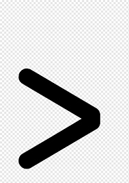
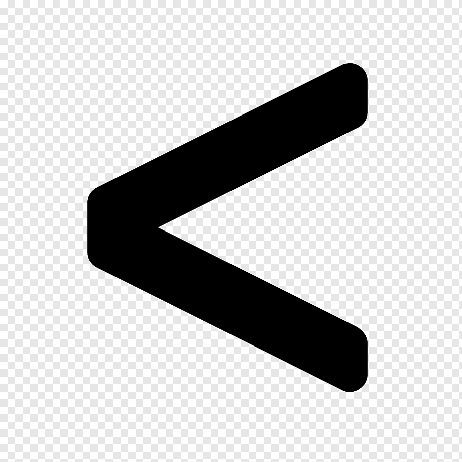

As imagens também podem ser clicáveis. Imagens clicáveis geralmente fazem com que o cursor do mouse mude para o formato de “mão” quando o cursor se move sobre a imagem.
Uma das imagens abaixo é clicável. Encontre-o e clique nele para avançar para a próxima tela.
|
 | |
|
 | |